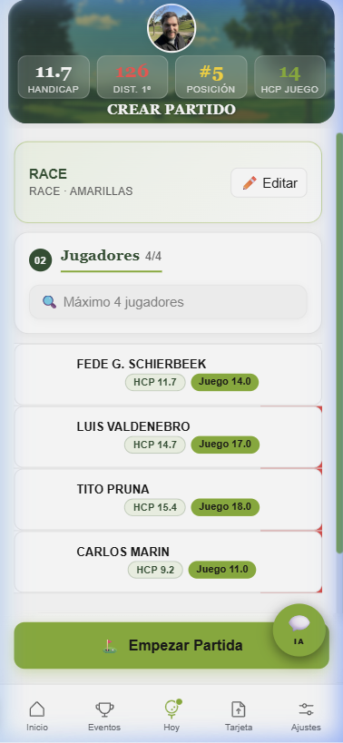
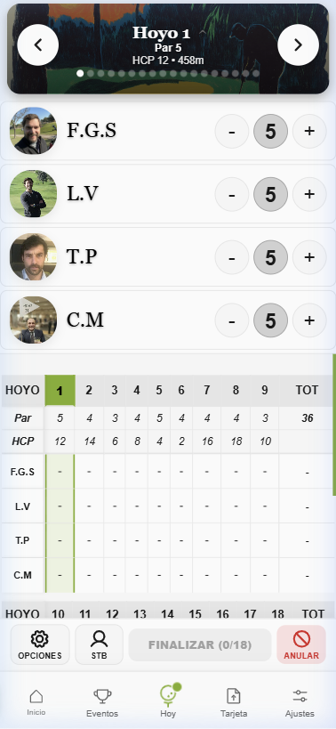

Bloque 4
Jugar con Otros
El golf es social. La plataforma te permite compartir ronda en tiempo real, competir con apuestas amistosas entre compañeros e inscribirte en eventos organizados por tu admin.
Sección 4.1
Crear una Partida Multijugador
Como jugador, quiero crear una sesión compartida donde todos vemos el marcador en tiempo real.
Flujo
Barra inferior → "Jugar"
→
Buscar jugadores
Buscador de compañeros
Solo aparecen jugadores de tu misma liga. Mínimo 3 caracteres para buscar. Puedes añadir hasta 4 jugadores totales (tú incluido).
Campo y barras
Todos juegan el mismo recorrido, pero cada jugador mantiene sus propias barras (y por tanto su propio HCP de juego).
Sincronización en tiempo real
Cuando un jugador introduce un golpe, los demás lo ven al instante en su móvil. El scorecard registra qué dispositivo introduce cada resultado para garantizar trazabilidad en torneos oficiales.

Multijugador configurado
Scorecard 4 jugadores